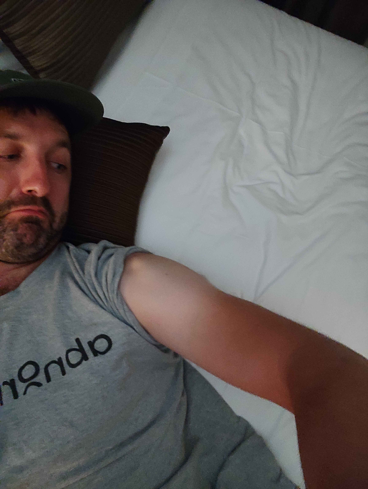
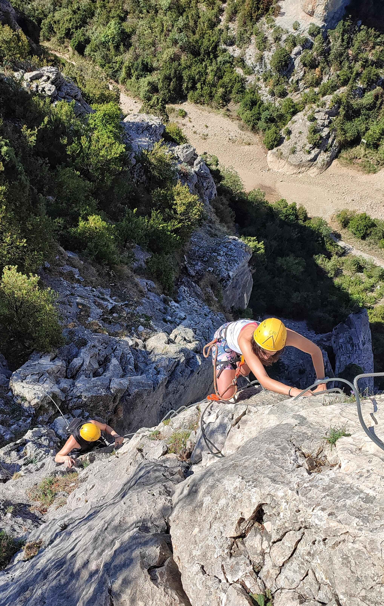
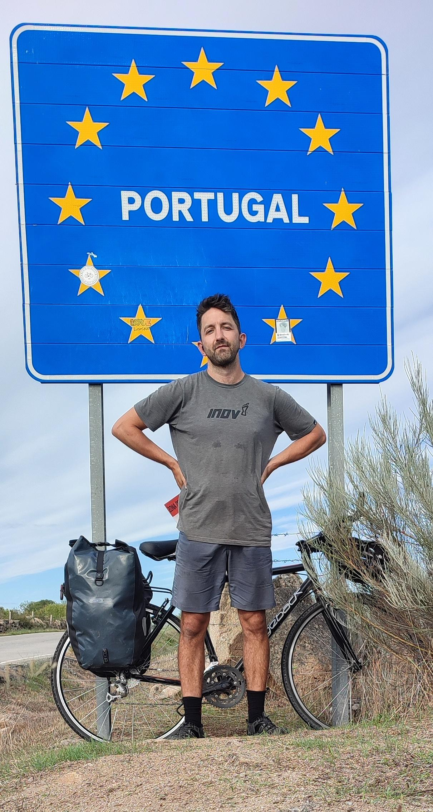
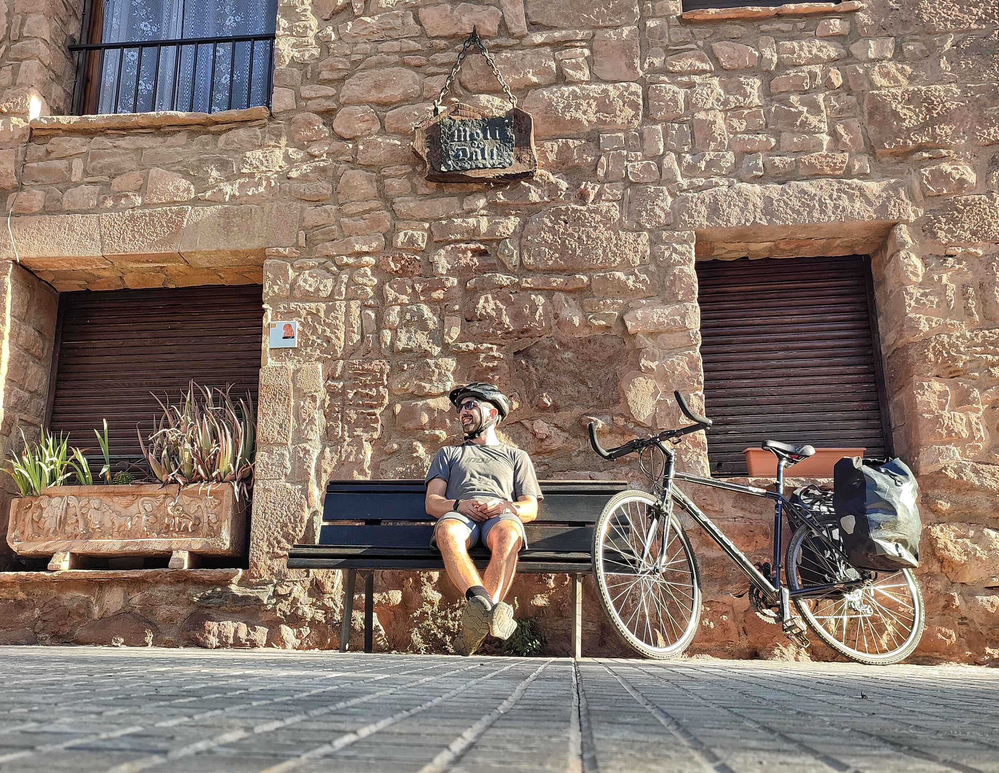

5 Things I Learnt Cycling From Barcelona to Lisbon
1. Routine is good (and then bad)
I used apps (Komoot and Gaia) to plan each day’s route. The cycle trails were traffic free and scenic, but the surfaces were inconsistent and included lots of bumpy gravel which was hard on the bike and my wrists. On the third day I set off without properly checking the route, and ended up carrying my bike for 3 hours up a mountain in the rain.
Feeling tired and sour, I left the trails and started cycling on roads. I discovered the N roads in Spain often went alongside the motorway, relatively quiet, and whilst they weren’t as scenic I was covering much greater distances.
With the greater distances came longer days, and I found that when you’re tired, hungry, and (sometimes) miserable, you can become apathetic to looking after yourself. It can be easier to wallow in discomfort than muster the motivation to fix the situation. During long days I became hesitant to stop for water, or eat, or put sunscreen on (I was naive to the late September sun in Spain…)
After the first week I got better at looking after myself and knew how to plan the day; which roads to follow, what to eat, how much water to pack and where to refill for free, and where to sleep. It was initially really satisfying to create a system, to become efficient and ‘good’ at touring, and after 10 days I was averaging 150km per day. But as the days went on I found that with routine came repetition, and the repetition began to make me grumpy…
2. When it gets tough, you ask why
After the first week I started feeling unhappy, it became a grind, the same thing everyday. It’s uncomfortable cycling longer distances continuously, and I started to question why, why am I doing this, what’s the point? I wasn’t sure that I had a good reason for being there.
I also started to question my destination. What if I finished in Madrid, what difference would this make? The endpoint of Lisbon was mostly arbitrary, chosen for being a good distance in relation to the available time that I had. But if I finished somewhere closer, would the challenge or experience be sullied in some way? Is completing something because you told others or yourself that you would do it, enough?
A quote that I like is:
“And to those who ask why, it is as well there are those who don’t feel the need to ask”.
Often when I’m setting out for adventures, or deciding to do something, there isn’t really a reason, it’s just an urge or impulse which I feel the need to follow. This is one of the ways I get over the ‘doorstep mile’, instead of thinking too much about the pros and cons I prefer to just get out and give something a try.
Once the initial excitement and optimism of the trip wore off, the ‘why’ of this trip did start to matter more to me however. I was exhausted and my body was sore, and I was finding it harder to motivate myself as I was unsure of the reasons for doing it.
I was expecting to be miserable and this did make it easier. In some ways it was the doing of a hard thing which attracted me to the trip in the first place, I felt that somehow it would be good for me. But the feeling still sucked when it hit.
3. Meeting people on the road is amazing
Just as I was reaching the peak of my grumpiness, I met some people that replenished my spirits and left me happy and excited to carry on.
In Central Spain I met Guada, who invited me out for dinner with her friends. She told me that there was a Via Ferreta route nearby that she’d always wanted to do, and so the next day we drove into the mountains, hired climbing equipment, and did it. I got back on the bike in the late afternoon, and cycling out of town I felt incredibly happy and grateful to have met some cool people, shared some laughs, and got out on a small adventure together.
I also met Isla in Valladolid, and she showed me around town for the time I was there. The interest that she showed in my trip reminded me that it was a cool thing to do, that it was a privilege to leave 'life' behind for a few weeks and have an experience full of so many unknowns.
4. Embracing grubbiness
“Travel is only glamorous in retrospect.”
After 2 weeks I was tired and smelly. I didn’t have regular access to showers and toilets, and there was a lack of opportunities to wash clothing. My diet consisted of ice cream and late night carbs, I was sunburnt, and on the days where my bicycle broke I wore an embittered expression on my face, unhappy with the world.
I found that the secret to getting through this was to embrace it. There’s a unique kind of satisfaction taken from eating a piece of cheese with the unwashed knife that you had earlier used to pop a blister. It’s the rite of passage of becoming a dirtbag, and in some weird way it’s thoroughly enjoyable. To discover a sweat rash on the inside of your thigh which is only a few live cultures away from a fungus, is, for some, a form of woe. However for those well accustomed to grubbiness, this can be an achievement, a trophy even, to be photographed and sent to friends back home.
This grubbiness does affect how (some) other people view you. To wheel a muddy bicycle into a hotel lobby can cause a great deal of alarm to some of the establishment’s guests. In rural mountain towns a dirty man constructing a baguette stuffed with 8 triangles of soft cheese can ruin the ambience of the parque for some of the more traditional townsfolk. But those reactions were in the minority, and as I continued I was happy existing within the strange comfort of my own squalor.
5. Difficult times made the good times better
I had some bad experiences on the trip. Carrying a fully loaded bicycle up the mountain was hard work, and gave me a pain in my right knee which didn’t subside for the rest of the trip.
On another day a spoke snapped, buckling my back wheel. I still had 25km to town and tried to hitch a lift, but was unable to. In the end I cycled, but got a puncture which I was unable to fix because I had bought inner tubes with the wrong kind of valve. I was forced to cycle 20km into a strong headwind, in 30 degree heat, on a flat and buckled back wheel. It was joyless.
I like to rate things out of 10 (i’ll often ask people to rate their food…) If we think about the enjoyment of life on a scale of 1-10, most of the time I would say that life falls within the 4-6 range. Someone cleverer than I named this the zone of comfortable complacency. Everything is OK, not terrible, not fantastic, but fine.
When I look at the best moments of my life, the times i’ve had an 8 or 9 type experience, it’s almost always been times when i’ve been out of my comfort zone, doing hard things, which involved some kind of misery. These good times were not in spite of the bad times, but because of them. I think if we want to experience the best that life can offer, we need to have struggled or fought to reach that point; the struggle is a prerequisite which elevates the good moments to become great.
The day after my wheel buckled, after fixing the bike, I cycled 150km and had the best day of the trip.
